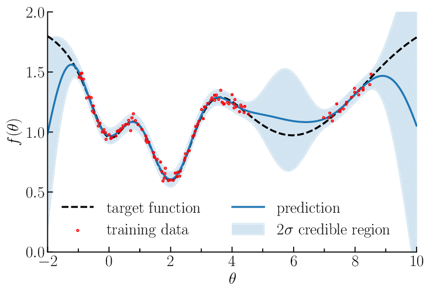

Anomaly detection using density matrices and kernel density estimation (AD-DMKDE)
Joseph A. Gallego-Mejia / Oscar Bustos / Fabio González
jagallegom@unal.edu.co / oabustosb@unal.edu.co / fagonzalezo@unal.edu.co
Engineering – Systems and Industrial Department – Bogota - Colombia
Background


Density Estimation

- Probability density function (pdf): defines the likelihood of failing within particular range of values from a random variable.
- Density estimation: estimate the pdf from data.
- Two approaches: parametric and non-parametric.
Kernel Density Estimation

- Non-parametric density estimation method.
- Does not make any particular assumption about the underlying probability density function.
- Unbiased estimator of the pdf.

Kernel Density Estimation Problems
- Inneficient. Memory based algorithm.
- High dimensional data.
- It is not differentiable.
| Phase | Memory | Time |
|---|---|---|
| Training Phase | \(O(N)\) | \(O(1)\) |
| Testing Phase | \(O(N)\) + \(O(M)\) | \(O(NM)\) |
N: number of training points
M: number of testing points
Anomaly Detection
Tools
- Let \(\alpha\) be the ratio of the anomaly points
Anomaly Detection
Tools

- Let \(\alpha\) be the ratio of the anomaly points
- When \(\alpha\) is high \(\rightarrow\) supervised learning approach.
Anomaly Detection
Tools

- Let \(\alpha\) be the ratio of the anomaly points
- When \(\alpha\) is high \(\rightarrow\) supervised learning approach.
- However, when \(\alpha\) is low \(\rightarrow\) outlier detection algorithms.
Anomaly Detection

- Anomaly is an observation that deviates considerably from some concept of normality.
- Also known as outlier or novelty detection (other terms: unusual, irregular, atypical,).
- It can be solved using supervised, unsupervised or semi-supervised approaches
Anomaly Detection Applications

Anomaly Detection Methods

Ruff, L., Kauffmann, J. R., Vandermeulen, R. A., Montavon, G., Samek, W., Kloft, M., ... & Müller, K. R. (2021). A unifying review of deep and shallow anomaly detection. Proceedings of the IEEE.
Problem Statement
Challenges of density estimation methods
- Efficiency and scalability.
- Simplicity.
- Ability to produce a good estimation of the density.
- Integrability with deep models
- Good for anomaly detection?
Problem Statement
| Aspects | Kernel Density Estimation | Neural Density Estimation | Generative Adversarial Networks | |
|---|---|---|---|---|
| Non Memory Based | ✖ | ✓ | ✓ | |
| Simple Model | ✓ | ✖ | ✖ | |
| Training Difficulty | ✓ | ✖ | ✖ | |
| Density Estimation | ✓ | ✓ | ✖ | |
| Differentiable | ✖ | ✓ | ✓ | |
| Good for anomaly detection | ✓? | ✓? | ✓? |
Problem Statement
| Aspects | Kernel Density Estimation | Neural Density Estimation | Generative Adversarial Networks | Ideal Method |
|---|---|---|---|---|
| Non Memory Based | ✖ | ✓ | ✓ | ✓ |
| Simple Model | ✓ | ✖ | ✖ | ✓ |
| Training Difficulty | ✓ | ✖ | ✖ | ✓ |
| Density Estimation | ✓ | ✓ | ✖ | ✓ |
| Differentiable | ✖ | ✓ | ✓ | ✓ |
| Good for anomaly detection | ✓? | ✓? | ✓? | ✓? |
Hypotheses
- Using this model for anomaly detection can obtain results that are competitive with state-of-the-art anomaly detection methods.
Anomaly detection using density matrices and kernel density estimation (AD-DMKDE)

Density Matrix Kernel Density Estimation
- An efficient approximate version of KDE.
- Non-memory based.
- Differentiable.
- Two ways of training: optimization free and sgd.
- Based on two main ideas:
- Random Fourier features to approximate the Gaussian kernel.
- Density Matrices to represent the PDF.

Anomaly Detection
Sklearn Methods vs DMKDE in Gaussian distributions

Anomaly Detection: Sklearn Methods vs DMKDE

Experimental Setup - Datasets
\[\tiny{ \begin{array}[c]{l|c|c|c} \hline Dataset & Instances & Dimensions & Outlier Rate \\ \hline Arrhythmia & 452 & 274 & 0,146 \\ Cardio & 2060 & 22 & 0,2 \\ SpamBase & 3485 & 58 & 0,2 \\ Thyroid & 3772 & 36 & 0,0247 \\ KDDCUP & 10000 & 118 & 0,1934 \\ Glass & 214 & 9 & 0,042 \\ Lympho & 148 & 18 & 0,04 \\ Ionosphere & 351 & 33 & 0,359 \\ Letter & 1600 & 32 & 0,0625 \\ MNIST & 7603 & 100 & 0,092 \\ Musk & 3062 & 166 & 0,0317 \\ OptDigits & 5216 & 64 & 0,0288 \\ PenDigits & 6870 & 16 & 0,0227 \\ Pima & 768 & 8 & 0,349 \\ Satellite & 6435 & 36 & 0,3164 \\ SatImage & 5803 & 36 & 0,0122 \\ Shuttle & 10000 & 9 & 0,0715 \\ Vertebral & 240 & 6 & 0,125 \\ Vowels & 1456 & 12 & 0,03434 \\ WBC & 378 & 30 & 0,0556 \\ \hline \end{array} } \]Results
\[\tiny{ \begin{array}[c]{l||c|c|c|c|c|c|c|c|c|c|c||c} \hline Data Set & OCSVM & iForest & Cov. & LOF & KNN & SOS & COPOD & LODA & VAE-B & DSVDD & LAKE & AD-DMKDE \\ \hline Arrhythmia & 0.813 & 0.821 & 0.818 & 0.804 & 0.861 & 0.773 & 0.844 & 0.798 & 0.856 & 0.864 & \underline{0.909} & \bf{0.911} \\ Cardio & \underline{0.804} & 0.752 & 0.756 & 0.702 & 0.753 & 0.739 & 0.750 & 0.717 & 0.783 & 0.735 & 0.672 & \bf{0.831} \\ Glass & 0.916 & 0.931 & 0.931 & 0.925 & 0.900 & 0.907 & 0.916 & 0.848 & 0.900 & 0.907 & \bf{1.000} & \underline{0.974} \\ Ionosphere & 0.765 & 0.710 & 0.876 & 0.830 & 0.817 & 0.784 & 0.736 & 0.510 & 0.714 & 0.674 & \bf{0.993} & \underline{0.959} \\ Letter & 0.893 & 0.897 & 0.909 & \bf{0.930} & 0.910 & 0.911 & 0.895 & 0.899 & 0.897 & 0.897 & 0.838 & \underline{0.927} \\ Lympho & 0.934 & \bf{1.000} & 0.934 & \bf{1.000} & \bf{1.000} & 0.934 & 0.962 & 0.923 & \bf{1.000} & \bf{1.000} & \bf{1.000} & \bf{1.000} \\ MNIST & 0.881 & 0.881 & 0.841 & 0.886 & 0.909 & 0.864 & 0.868 & 0.866 & 0.895 & 0.880 & \bf{0.959} & \underline{0.911} \\ Musk & 0.958 & 0.931 & \underline{0.997} & 0.958 & 0.991 & 0.951 & 0.964 & 0.954 & 0.984 & 0.992 & 0.639 & \bf{1.000} \\ OptDigits & 0.952 & 0.952 & 0.952 & 0.949 & 0.952 & 0.953 & 0.949 & \underline{0.955} & 0.951 & 0.952 & 0.819 & \bf{0.981} \\ PenDigits & 0.963 & \underline{0.967} & 0.966 & 0.961 & 0.965 & 0.963 & 0.966 & 0.966 & 0.966 & 0.963 & \bf{0.994} & \bf{0.994} \\ Pima & 0.592 & 0.624 & 0.559 & 0.615 & 0.644 & 0.636 & 0.615 & 0.597 & 0.632 & 0.679 & \underline{0.740} & \bf{0.758} \\ Satellite & 0.681 & 0.757 & 0.813 & 0.634 & 0.716 & 0.597 & 0.732 & 0.709 & 0.761 & 0.761 & \underline{0.841} & \bf{0.845} \\ SatImage & 0.984 & \underline{0.998} & 0.991 & 0.979 & 0.998 & 0.980 & 0.994 & 0.997 & 0.996 & 0.996 & 0.946 & \bf{1.000} \\ SpamBase & 0.702 & 0.794 & 0.714 & 0.702 & 0.719 & 0.719 & 0.799 & 0.699 & 0.741 & 0.738 & \bf{0.885} & \underline{0.816} \\ Thyroid & 0.953 & 0.958 & \bf{0.986} & 0.949 & 0.953 & 0.949 & 0.953 & 0.958 & 0.958 & 0.961 & 0.803 & \underline{0.967} \\ Vertebral & 0.750 & 0.778 & 0.817 & 0.796 & 0.810 & 0.817 & 0.817 & 0.817 & 0.817 & \underline{0.819} & 0.807 & \bf{0.904} \\ Vowels & 0.950 & 0.942 & 0.941 & 0.951 & 0.969 & 0.954 & 0.943 & 0.929 & 0.952 & 0.943 & \bf{1.000} & \underline{0.979} \\ WBC & 0.942 & 0.941 & 0.949 & 0.957 & 0.942 & 0.913 & \bf{0.970} & 0.947 & 0.957 & 0.956 & 0.897 & \underline{0.961} \\ \hline \end{array}} \]Density Matrices
Quantum Mechanics
Brief introduction
- State of a quantum system (QS) \(\psi \in \mathcal{H}\) (vector in a Hilbert space).
- Quantum uncertainty: a QS may be in any superposition of basis states.
- Born rule: probability that a measurement will produce a particular result.

Quantum Mechanics
Example

Density Matrices
Are they useful for statistics and ML?

- A more general model of probability.
- It combines linear algebra and probability
- Probability calculations with linear algebra
Density Matrices
Represent a probability function efficiently
- Categorical distributions: Obvious, but innefficient, not very useful.
Density Matrices
Represent a probability function efficiently
- Categorical distributions: Obvious, but innefficient, not very useful.
- Arbitrary distributions on \(\mathbb{R}^n\):
Not obvious, mixtures of non-parametric probability distributions.
Random Fourier Features
Kernel Methods

- Feature space induced by a kernel function.
Kernel Methods

- Feature space induced by a kernel function.
- High or infinite dimensional embedded feature space.
Kernel Methods
- Feature space induced by a kernel function.
- High or infinite dimensional embedded feature space.
- Problem: efficiency \(O(N^2)\)
\[\textbf{K}= \begin{bmatrix}k(\textbf{x}_1, \textbf{x}_1) & \cdots & k(\textbf{x}_1,
\textbf{x}_N)
\\ & \vdots
\\ \cdots& k(\textbf{x}_i, \textbf{x}_j) & \cdots
\\ & \vdots &
\\ k(\textbf{x}_N, \textbf{x}_1) & \cdots & k(\textbf{x}_N, \textbf{x}_N)
\end{bmatrix}\]
Kernel Methods
Several Methods

(nowadays called shallow methods)
- Support Vector Machines
- Kernel ridge regression
- Gaussian processes
- And many more
(nowadays called shallow methods)
Random Fourier Features
- Idea: feature space approximation.
Random Fourier Features
- Idea: feature space approximation.
- Given \( k:\mathbb{R}^d \times \mathbb R^d \rightarrow \mathbb R\)
builds an embedding \( \phi_{\text{rff}}: \mathbb R^d \rightarrow \mathbb{R}^D\)
such that \[ k(x,y) \approx \langle \phi_{\text{rff}}(x), \phi_{\text{rff}}(y) \rangle \]
Random Fourier Features
- Idea: feature space approximation.
- Given \( k:\mathbb{R}^d \times \mathbb R^d \rightarrow \mathbb R\)
builds an embedding \( \phi_{\text{rff}}: \mathbb R^d \rightarrow \mathbb{R}^D\)
such that \[ k(x,y) \approx \langle \phi_{\text{rff}}(x), \phi_{\text{rff}}(y) \rangle \] - Result: learn models involving non-linear kernels using linear methods
Random Fourier Features
- Idea: feature space approximation.
- Given \( k:\mathbb{R}^d \times \mathbb R^d \rightarrow \mathbb R\)
builds an embedding \( \phi_{\text{rff}}: \mathbb R^d \rightarrow \mathbb{R}^D\)
such that \[ k(x,y) \approx \langle \phi_{\text{rff}}(x), \phi_{\text{rff}}(y) \rangle \] - Result: learn models involving non-linear kernels using linear methods
- Test of the time award NeurIPS 2017
Random Fourier Features
Method
- Sample \(\{w_1,\cdots,w_D\} \sim p\text{, }p(w)\) is the Fourier transform of \(k\)
- Sample \(\{b_1,\cdots,b_D\} \sim Unif[0, 2\pi]\)
\[\phi_{\text{rff}}: \mathbb{R}^d \rightarrow \mathbb{R}^D\] \[x \rightarrow \sqrt{\frac{2}{D}}(cos(w_1^Tx + b_1), \cdots, cos(w_D^Tx + b_D)))\] - Based on the Bochner's theorem:
THeorem 1 (Bochner []). A continous kernel \(k(x,y)=k(x-y)\) on \(\mathbb{R}^d\) is positive definite if and only if \(k(\delta)\) is the Fourier transform of a non-negative measure. \[k(x-y)=\int_{\mathbb{R}^d} p(w)e^{jw'(x-y)}dw=\mathbb{E}[\zeta_w(x)\zeta(y)^*]\]